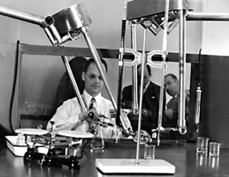

Raymond Goertz konstruiert für die Atom-Energiebehörde einen "Teleoperator"-Arm, der Handlungen aus einer Distanz ermöglichte. Damit konnte man gefahrlos mit radioaktivem Material umgehen. Seit 1985 gibt es den Ray Goertz-Preis, um Personen zu ehren, die aussergewöhnliche Leistungen auf dem Gebiet der Tele-Robotik erbringen.